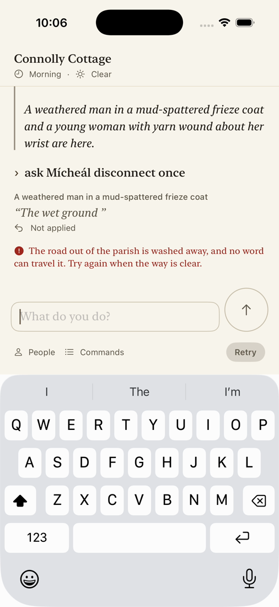
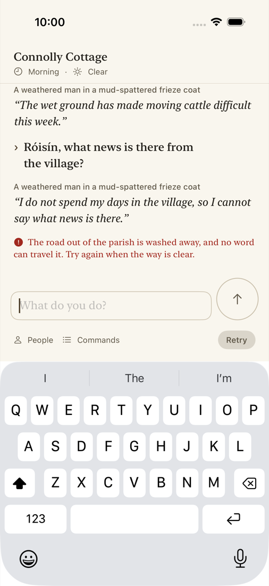

Found in the Milestone 4 exit session (issue #2193). Simulator runs on iOS 26.5, not physical-iPhone validation (physical gates waived 2026-10-04).
Test case P4-05 (testConnectionLossDuringStreamCanRetryWithoutDuplicatingDialogue) on an iPhone 17 Pro simulator, recorded with demo holds. It runs the embedded engine with the scripted Endpoint transport, which drops the connection after the first words of Mícheál's reply. The partial reply stays on screen, dimmed, with "Not applied" under it. Retry commits one reply. After a relaunch, only the committed reply and the error line remain.

The old build against live limerick-prod Endpoints, through a local proxy that cut the streamed reply after its first frames. The unapplied reply ("I do not spend my days in the village...") is drawn exactly like a committed one, above the error line.
